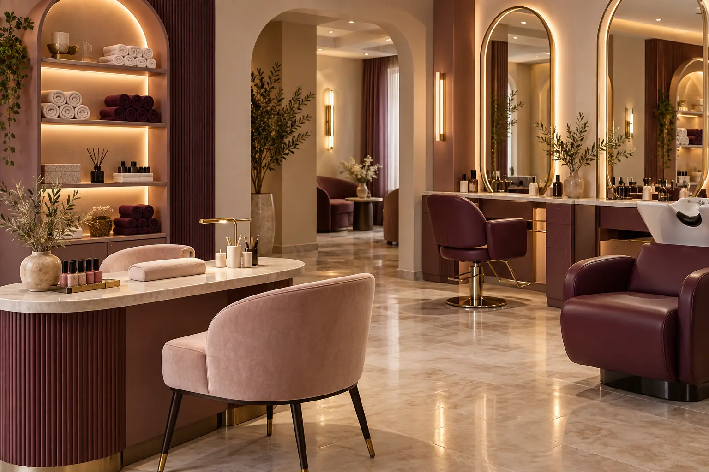

01
الشعر
قص وتصفيف وعلاجات وصبغات وفق القوائم العامة.
تصوّر مستقل لواجهة رقمية هادئة ترتّب خدمات الصالون الأساسية وتضع الموقع والاتصال في متناول الزائرات.

تجمع القوائم العامة المرتبطة بالنشاط بين العناية بالشعر، الأظافر، البشرة، المكياج وإزالة الشعر. يُفضّل تأكيد الخدمة المطلوبة مباشرة قبل الزيارة.
قص وتصفيف وعلاجات وصبغات وفق القوائم العامة.
مانيكير وبديكير وعناية بالوجه والبشرة.
مكياج، حواجب ورموش وإزالة شعر.
تمت مطابقة العنوان والهاتف مع ملف Google Maps وقائمة الأعمال العامة في 9 أكتوبر 2026. الأوقات قابلة للتغيير.
في الطابق الثاني من مجمع حسن البرديني 215 قرب دوار الدلة في مرج الحمام.
اتصلي مباشرة بالرقم المنشور للاستفسار عن الخدمة والوقت المناسب.
لا. هذا تصميم مقترح مستقل من Amjad Dannan وغير معتمد من الصالون.
استخدمي الاتصال أو الاتجاهات للتحقق من التفاصيل الحالية.
الصورة توليدية توضيحية وليست صورة للصالون أو أعماله. لا تستقبل هذه الصفحة حجوزات أو مدفوعات أو بيانات.